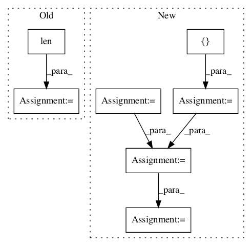

b68db1aaf6abe4d2cea8321cc6f1564228dd60f5,deepchem/models/tensorgraph/models/seqtoseq.py,SeqToSeq,__init__,#SeqToSeq#Any#Any#Any#Any#Any#Any#Any#Any#Any#Any#Any#,68

Before Change
self._annealing_final_step = annealing_final_step
self._annealing_start_step = annealing_start_step
self._features = self._create_features()
self._labels = layers.Label(shape=(None, None, len(output_tokens)))
self._gather_indices = layers.Feature(
shape=(self.batch_size, 2), dtype=tf.int32)
self._reverse_input = reverse_input
self._variational = variational
After Change
features = self._create_features()
gather_indices = Input(shape=(2,), dtype=tf.int32)
global_step = Input(shape=tuple(), dtype=tf.int32)
embedding = self.encoder([features, gather_indices])
self._embedding = self.encoder([features, gather_indices], training=False)
if variational:
randomizer = VariationalRandomizer(
self._embedding_dimension, annealing_start_step, annealing_final_step)
embedding = randomizer([self._embedding, global_step])
self._embedding = randomizer(
[self._embedding, global_step], training=False)
output = self.decoder(embedding)
model = tf.keras.Model(
inputs=[features, gather_indices, global_step], outputs=output)
super(SeqToSeq, self).__init__(model, self._create_loss(), **kwargs)
def _create_features(self):
return Input(shape=(None, len(self._input_tokens)))
In pattern: SUPERPATTERN
Frequency: 5
Non-data size: 7
Instances
Project Name: deepchem/deepchem
Commit Name: b68db1aaf6abe4d2cea8321cc6f1564228dd60f5
Time:
Author: null
File Name: deepchem/models/tensorgraph/models/seqtoseq.py
Class Name: SeqToSeq
Method Name: __init__
Project Name: dmlc/dgl
Commit Name: 168a88e57070871eef5a9fcdad3ed1a4d708d7bd
Time:
Author: null
File Name: examples/pytorch/graphsage/train_sampling.py
Class Name: SAGE
Method Name: inference
Project Name: dmlc/dgl
Commit Name: 168a88e57070871eef5a9fcdad3ed1a4d708d7bd
Time:
Author: null
File Name: examples/pytorch/graphsage/train_sampling_multi_gpu.py
Class Name: SAGE
Method Name: inference
Project Name: dmlc/dgl
Commit Name: 168a88e57070871eef5a9fcdad3ed1a4d708d7bd
Time:
Author: null
File Name: examples/pytorch/ogb/ogbn-products/graphsage/main.py
Class Name: SAGE
Method Name: inference
Project Name: dmlc/dgl
Commit Name: 168a88e57070871eef5a9fcdad3ed1a4d708d7bd
Time:
Author: null
File Name: examples/pytorch/ogb/ogbn-products/gat/main.py
Class Name: GAT
Method Name: inference